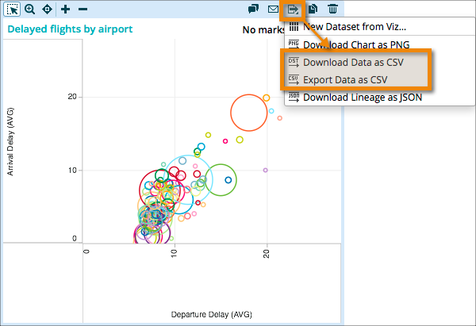

You can export the data comprising a visualization as a CSV-formatted file, and download it to your local computer or to a remote file system such as HDFS or S3.

Note: Users in view-only mode cannot export viz data to a CSV file.
-
From the viz toolbar click the export menu
 .
.
-
Select either Download Data as CSV or Export
Data as CSV.
When you choose Download Data as CSV, a single a gzip-compressed comma-separated values (csv) file is created on your Desktop (for Windows) or in Downloads (for Mac). The file naming convention is:
dataset-name_lens-name_epoch-timestamp.csv.gz
When you choose Export Data as CSV, you must enter a URL to a remote file system in the format of:
protocol://hostname:port/path-to-export-location
For example:
hdfs://10.80.231.123:8020/platfora/exports
- Depending on the size of the data requested, the export can take a while to complete. If downloading data, stay on the page until the download starts or else the export will be cancelled.